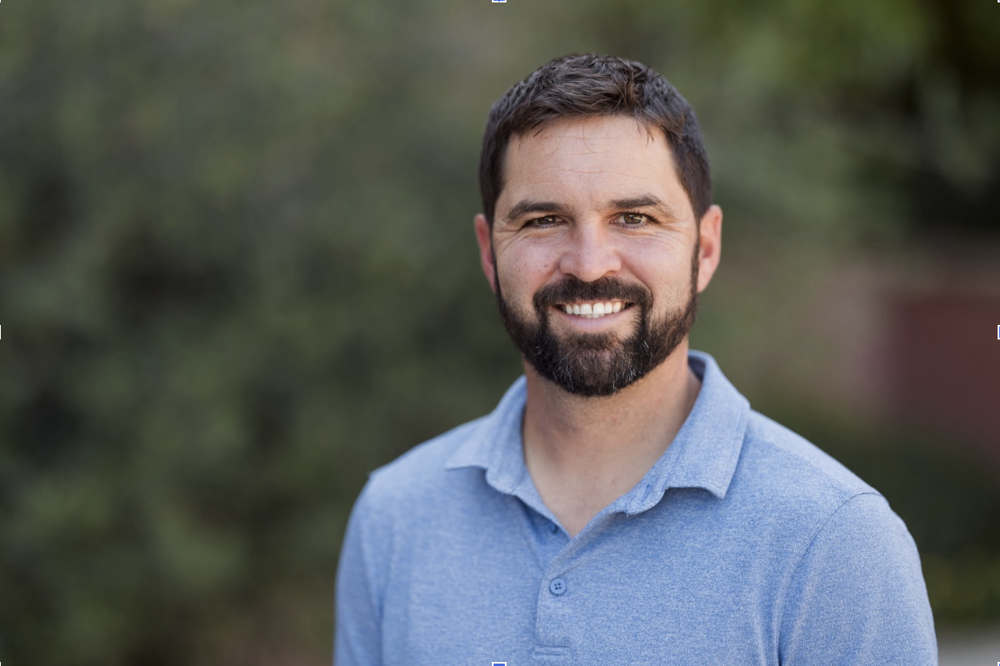

A ~2 minute documentary-style short film for SBS Comms. One firm's declaration that the RFP process is broken — played with the gravity of a prestige-TV exposé about something that actually matters.
The on-camera presence anchoring the entire piece. His performance walks the line between measured sincerity and quiet absurdity.

Male, early-to-mid 30s. Dark brown hair, full well-groomed beard. Approachable but authoritative. For the shoot, wardrobe shifts from the casual headshot look to a professional button-down (navy or charcoal) — still approachable, but the framing says "this person runs a serious firm."
Expression range: measured sincerity in the opening, quiet frustration in the middle, resolute confidence in the declaration, warm humor in the close. The gravity should feel slightly disproportionate to the subject — that's where the comedy lives.
Seven acts in two minutes. The emotional shape moves from somber confession through absurdist exposé to warm, human resolution.
Each shot includes a description, camera direction, and an AI image generation prompt for storyboard animatic frames. Click "Show Prompt" to reveal the generation text.
Single piano throughout. Minimal and deliberate. The score should feel like it wandered in from a documentary about something that actually matters.
Solo piano. Minimal, contemplative, Nils Frahm-inspired. Begins with a single sustained note, sparse and somber in a minor key. Slow, deliberate pacing--each note placed with intention and space between. The tone feels like the opening of a serious documentary, as if something important is about to be revealed. Gentle felt-piano texture, intimate and close-mic'd. Around the halfway point, the melody begins building slowly--adding a second voice, slightly more movement, still restrained. A brief emotional swell at 1:15--the fullest the piece gets, with overlapping sustained chords that feel heavy and resigned. Then it recedes. In the final 30 seconds, the key shifts to major. The notes become warmer, more open, with quiet resolution. The piece ends gently, like a held breath finally released. No percussion, no strings, no synths. Piano only. 2 minutes total. The mood walks the line between genuine emotion and the subtle absurdity of taking something mundane very seriously.
JOB plays the opening almost too sincerely. The gravity should feel slightly disproportionate to the subject — like he's about to reveal a massive corporate scandal, and it turns out he's talking about procurement documents. By the end, the argument should feel genuinely honest. The joke is in the framing. The substance should land.
The more you treat mundane office behavior with the visual grammar of a serious documentary, the funnier it gets. Ken Burns effect on a PDF. Somber piano over a mail merge. Slow dolly shots of someone adjusting table borders in Word. Every B-roll moment should be lit and composed like it belongs in a prestige crime series.
Run tight at around two minutes. Resist the urge to rush. The pauses between JOB's statements are doing real work. The silence after "RFPs" is the comedic hinge of the whole piece. If that beat doesn't land, nothing after it will either.
After JOB says "RFPs" — two full seconds of dead silence. No music, no movement. The word should hang in the air like a confession. This is the moment the audience either buys the premise or doesn't. Every frame before it is setup. Everything after depends on it.